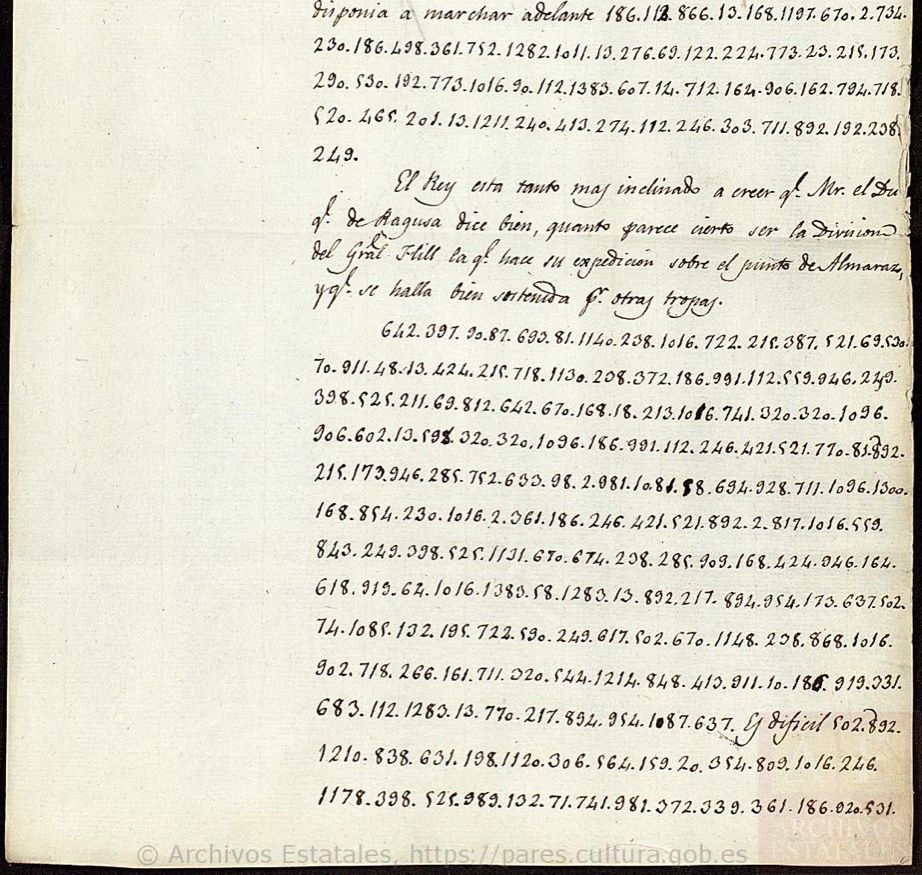

At a glanceKnown key applied · partial · Jourdan’s letter 259 of 267 numbers, Marmont’s about 85%
- The letters
- Marshal Jourdan, King Joseph’s chief of staff, to Marshal Soult, commanding the Army of the South, Madrid, 28 May 1812; and Marshal Marmont, commanding the Army of Portugal, to Jourdan, Salamanca, 1 June 1812. Both were intercepted and survive in Spanish copies that keep the cipher passages as numbers.
- Where
- Archivo Histórico Nacional (Madrid), Diversos-Colecciones 134, N.34 (Jourdan’s letter, in a Spanish translation of the time, PARES 3156392, images 2–3) and N.73 (Marmont’s, PARES 3109832, images 2–3; catalogue no. 751 here).
- The cipher
- The Grand Chiffre of 1812, which the British called the Great Paris Cipher: a table of numbers for letters, syllables, words and names, extended to 1,400 with additions for Spain (1300 Lord Wellington, 1383 the Tagus), with several numbers for frequent words.
- How it was deciphered
- With the French deciphering table of the time (Service historique de la Défense, “B n° 30”), whose cells Brice Dudout read on Jean-François Bouchaudy’s photographs and froze before decoding. Jourdan’s letter was kept out of that work: decoded with the frozen entries, it scores above 998 of 1,000 tables with the values shuffled.
- What they say
- Jourdan orders Soult to reinforce Count d’Erlon’s corps so that it can beat General Hill on the Guadiana or, if Wellington calls Hill back, to send it over the Tagus at the bridge of the Arzobispo to cover Madrid. Marmont writes that only certainty and great operations begun in the South could outweigh an operation in the North.
- Still open
- In Jourdan’s letter, eight numbers that do not give the expected value and are restored from the sense. In Marmont’s, about 26 of 176 numbers: the Spanish copy has too many miscopied figures. Scovell, Wellington’s cipher officer, deciphered Marmont’s letter in 1812; his decipherment was never printed.
- Credit
- Brice Dudout (Europe chiffrée), working with Claude Opus 5.5: the table cells read and frozen, both transcriptions, the held-out test, the French text and the English translation. His write-up. The deciphering table of the time is kept at the Service historique de la Défense; the photographs of it are Jean-François Bouchaudy’s.
01 The two letters
On 19 May 1812 General Hill took and destroyed the forts and the pontoon bridge at Almaraz, the only solid crossing of the Tagus between Marmont’s Army of Portugal and Soult’s Army of the South. Joseph, now commander-in-chief in Spain, with Marshal Jourdan as his chief of staff, was trying to bring into action the corps of Count d’Erlon (General Drouet), detached from Soult’s army. Eight weeks later, on 22 July, Wellington beat Marmont at Salamanca.
The Archivo Histórico Nacional keeps, in the Depósito de la Guerra papers of its Diversos-Colecciones, French despatches of that year that fell into Spanish hands. Two of them are in the Grand Chiffre:
- Diversos-Colecciones 134, N.34: a Spanish translation, made at the time, of Jourdan’s letter to Soult (“el Mariscal Duque de Dalmacia”), Madrid, 28 May 1812, initialled “Monsalud”. The translator put the clear parts into Spanish and copied the three cipher passages as numbers, 267 in all, without deciphering them.
- Diversos-Colecciones 134, N.73: a copy of Marmont’s letter to Jourdan, Salamanca, 1 June 1812, in a Spanish hand, with its cipher passages as numbers, 176 in all. Catalogue no. 751 here.

A third piece of the same collection, Colonel Jardet to Marmont, Paris, 6 March 1812 (133, N.29; catalogue no. 724), is in a different cipher and needs no work: it is a copia descifrada conforme, the Spaniards’ full decipherment, with their reconstruction of its key attached, 48 numbers built on a line of Voltaire’s Tancrède, “À tous les cœurs bien nés que la patrie est chère”, with the numbers from 49 up as nulls. It is also no. 1 of George Scovell’s file of intercepted ciphers (Oman, A History of the Peninsular War V, appendix XV).
02 The cipher and its table
The Grand Chiffre of 1812, which the British called the Great Paris Cipher, is a repertory of 1,200 numbers for letters, syllables and words, extended to 1,400 with additions for Spain: 1211 l’armée du Centre, 1214 l’armée anglaise, 1300 Lord Wellington, 1383 le Tage. Frequent words have several numbers. The groups are written with points between them, and words are spelled out of syllables where the table has no entry: 909 168 424 946 is Mi-ra-ve-te, 217 894 954 173 637 Ar-zo-bi-s-po.
The French deciphering table survives at the Service historique de la Défense (“B n° 30”), and Jean-François Bouchaudy has published photographs of it. Brice Dudout had already read 226 of its entries to decipher a letter of King Joseph of December 1812 (his edition); for these letters he read the cells they needed. The entries used are in targets/marmont1812/key_1812_entries.tsv, each with the source of its reading; the photographs are not reproduced.
03 How it was deciphered
No cryptanalysis. The numbers 2–1400 of Army of Portugal traffic in 1812 pointed to the Grand Chiffre, and the first line of Marmont’s letter, decoded with the 226 entries already read, gave French. The rest is applying the table of the time unchanged.
A frozen table and a held-out letter. Both transcriptions were frozen with a SHA-256 hash. The cells needed for Marmont’s letter were transcribed from the photographs and frozen; Jourdan’s letter was kept out of that work and decoded only afterwards. Each decoding, taking the main value of every entry with no correction by the sense, was scored with a French letter-trigram model learnt on an independent text (Marmont’s Mémoires, vol. IV) against 1,000 tables in which the same values are given to the numbers at random. Jourdan’s letter scores −2.184 with the frozen entries, against −2.217 at the 99th percentile of the shuffled tables, and only 2 of the 1,000 score higher; after seven cells were looked at again on the table (424, 132, 276, 1120, 525, 320, 642, kept in a separate list), none does. Marmont’s letter passes narrowly with the frozen entries (−2.248 against −2.249) and clearly after the re-readings. Two word-coverage scores tried afterwards did not separate the real table from the shuffled ones, because long multi-word entries flatter the shuffled tables, and they are not used.
The text. Every number was then given its value and the French built into sentences, checked against Jourdan’s parallel letter to Marmont of the same day, printed in Marmont’s Mémoires, and his order to d’Erlon of 7 May 1812 (Du Casse, Mémoires du roi Joseph IX, p. 6), which use some of the same words.
04 Jourdan to Soult
Brice Dudout’s text of the three cipher passages; the clear parts of the letter, which the Spanish copy gives in translation, are summarised. {x} probable reading; [x] restored from the sense.
The letter opens in clear: the King has received a letter of the 26th from Marmont (the Duke of Ragusa), who reports that Wellington is north of the Tagus with his whole army except Hill’s division, that the English army will have moved against him by about the 8th, and that two divisions have already crossed the Douro. Then the first cipher passage:
le duc de Raguse a rappelé à lui la division {Foy}, de manière qu’il ne va plus rester dans la vallée du Tage que trois bataillons et environ huit cents chevaux de l’armée du Centre, sous les ordres du général Treillar[d].
The Duke of Ragusa has recalled Foy’s division to him, so that there will remain in the Tagus valley only three battalions and about eight hundred horse of the Army of the Centre, under the orders of General Treillard.
A clear paragraph follows: the King believes Marmont all the more because it is Hill’s division that has made the expedition against the bridge of Almaraz, well supported by other troops. Then the orders, in cipher:
Vous sentez, monsieur le maréchal, que dans cette circonstance vous deve[z] renf[or]cer le corps du comte d’Er{lon} autant que cela vous sera possible, afin de le me{tt}re en état de [ba]{tt}re le corps du général Hill s’il reste sur la Guadiana. Si [au] contraire lord Wellington rappelle à lui le général Hill, alors le comte d’Er{lon} doit se porter sur Miravete et venir pas[ser] le Tage au pont de l’Arzobispo, pour co[u]vrir Madrid ou pour se porter sur le flan[c] droi{t} de l’armée anglaise, suivant les circonstances. Le passage du pont de l’Arzobispo es difícil pour l’artillerie, mais il n’est pas impraticable. Le général d’Er{lon} devroit me[ner] avec lui le moins el equipaje posible. Es muy importante que este general se ponga en correspondencia avec le général Treillar[d], qui va commander dans la vallée du Tage.
You will feel, Monsieur le Maréchal, that in this situation you must reinforce Count d’Erlon’s corps as much as you can, so as to enable it to beat General Hill’s corps if he stays on the Guadiana. If on the contrary Lord Wellington calls General Hill back to him, then Count d’Erlon must move on Miravete and come to cross the Tagus at the bridge of the Arzobispo, to cover Madrid or to move against the right flank of the English army, as circumstances require. The passage of the bridge of the Arzobispo [is difficult] for the artillery, but it is not impracticable. General d’Erlon should take with him as little [baggage as possible. It is very important that this general put himself in correspondence] with General Treillard, who is to command in the Tagus valley.
The words in Spanish were in clear in the original; the translator put them into Spanish with the rest of the clear text, and the English gives them in brackets. The third cipher passage, from avec le général Treillard, ends the orders; the clear closing is signed Jourdan, “Mariscal del Imperio, Jefe del E. M. de S. M. C.”
05 Marmont to Jourdan
Marmont’s letter of 1 June, from Salamanca, is in the same cipher, but the copy is poor: the Spanish copyist confused the forms of 1, wrote 3 for 9 and the reverse, and transposed figures. About 150 of its 176 numbers give a value (about 85%), and some 26 do not. The passages that build sentences, as Brice Dudout gives them, with a few words restored from the sense:
“C’est qu’il n’y a qu’une certitude absolue et des opérations capitales commencées dans le Midi qui puissent l’emporter sur les probabilités d’une opération dans le Nord”; “J’écris itérativement au général Caffarelli”; “Il serait bien désirable que le général Drouet suivît les mouvements du général Hill”; “en préparant un matériel d’artillerie à Talavera”.
“It is that only an absolute certainty and capital operations begun in the South could outweigh the probabilities of an operation in the North”; “I write repeatedly to General Caffarelli”; “It would be most desirable that General Drouet should follow the movements of General Hill”; “by preparing artillery material at Talavera”.
Wellington had this letter too. On 7 June 1812 he wrote that he had “one intercepted letter from Marmont to Jourdan; which I am endeavoring to decipher” (Gurwood, Dispatches IX). It is no. 28 of George Scovell’s file of ciphers; his manuscript decipherment of it has never been printed, and Oman gives only a one-line summary. The line-by-line decoding of what this copy gives is under Full texts below; Brice Dudout’s working notes on it are in reading_N73_partial.md.
06 The people and places
- Foy’s division, of the Army of Portugal, had been guarding the Tagus valley. Foy’s name is written 1011, a cell given as “Foi s” in Brice Dudout’s notes and as “soir” in his list of entries: the reading {Foy} is probable.
- Treillard commanded the troops of the Army of the Centre in the Tagus valley.
- Miravete is the pass and fort above Almaraz; the bridge of the Arzobispo crosses the Tagus upstream, on the Talavera road. Jourdan’s parallel letter to Marmont of the same day calls it difficult for the artillery, “but I do not think it impracticable”, and speaks of the same eight hundred horse.
- Monsalud. The Marqués de Monsalud commanded Spanish troops in Extremadura. On 11 June 1812 Wellington wrote to Hill that Monsalud believed Joseph had ordered Soult to approach the Tagus, but “did not send me the paper on which he founds this notion”. The paper may be this copy; that is only a hypothesis.
07 What remains uncertain
Jourdan’s letter. Of 267 numbers, 259 give their value in the table (97.0%): 250 certain and 9 probable. By the project’s grades the certain values are H (read from the key of the time), the probable ones M, and the restorations I. Eight numbers do not give the expected syllable and are restored from the sense: 208 renf[or]cer, 598 [ba]ttre, 88 [au] contraire, 62 pas[ser], 1085 co[u]vrir, 266 flan[c], and 981 372 me[ner]. They are copying errors by the translator, who at places confuses 1 and 7, 3 and 9, 5 and 6, or cells the photographs do not show clearly. The probable readings are 320 (a T-shaped cell), 525 lon and 1011 {Foy}.
Two observations made here on the PARES image, not part of the contributed text and not checked against the table: the number transcribed 88 (line D5) has an overwritten first figure that looks like the copyist’s 5, and 58 is aux in the table, which, read au as in line D8 (58 before pont), would give au contraire without a restoration; and the number transcribed 62 (line D8) ends in a figure shaped like the 4 of 74 on the next line, so it may be 64, a cell not yet transcribed from the table.
Marmont’s letter. About 26 of its 176 numbers are unresolved and several words are restored; the passages around them do not build sentences. The Spanish copy is the limit: a better copy would settle them, the intercepted original among Scovell’s papers or the French minute; neither has been consulted.
Earlier work. Jourdan’s letter to Soult is not in Scovell’s list (Oman V, appendix XV, where nos. 26–27 are letters of 26 May to Soult on the fall of Almaraz), nor in Du Casse’s Mémoires du roi Joseph IX, Marmont’s Mémoires IV, Jourdan’s Mémoires militaires, Wellington’s Dispatches IX or his Supplementary Despatches VII (Brice Dudout’s search, 28 October 2026). No decipherment of it was found.
08 Sources
- Archivo Histórico Nacional, DIVERSOS-COLECCIONES,134,N.34, Jourdan to Soult, Madrid, 28 May 1812, Spanish translation of the time: PARES record 3156392, images 2–3.
- Archivo Histórico Nacional, DIVERSOS-COLECCIONES,134,N.73, Marmont to Jourdan, Salamanca, 1 June 1812: PARES record 3109832, images 2–3.
- Archivo Histórico Nacional, DIVERSOS-COLECCIONES,133,N.29, Jardet to Marmont, Paris, 6 March 1812, deciphered copy with its key: PARES record 3101366, key on image 11.
- The deciphering table of the 1812 Grand Chiffre, Service historique de la Défense, “B n° 30”: photographs by Jean-François Bouchaudy, jfbouch.fr.
- Brice Dudout, Europe chiffrée: Jourdan to Marshal Soult, “You will feel, Monsieur le Maréchal…”, Madrid, 28 May 1812 (2026, CC BY 4.0): text, translation and notes; and his edition of King Joseph’s letter of December 1812 in the same table.
- Charles Oman, A History of the Peninsular War, vol. V (1914), appendix XV (Scovell’s ciphers); J. Gurwood, ed., The Dispatches of the Duke of Wellington, vol. IX; A. Du Casse, ed., Mémoires et correspondance du roi Joseph, vol. IX; Mémoires du maréchal Marmont, vol. IV.
Folder: targets/marmont1812/ (notes, the transcriptions of both letters, their line-by-line decryptions, the table entries used with the source of each reading, the French text and English translation of Jourdan’s letter and the working notes on Marmont’s, as contributed by Brice Dudout). The text and translation are his, reproduced under CC BY 4.0.